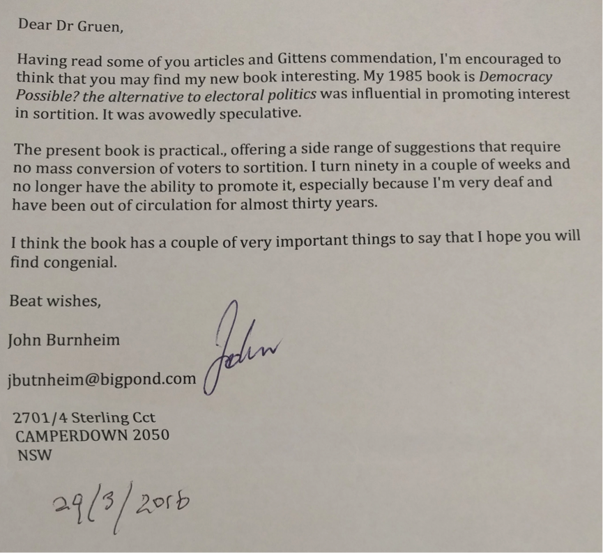
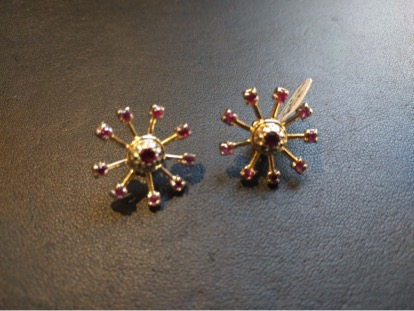

https://youtu.be/FX_JF8o7ca8
https://youtu.be/aILtCv_T9vI
We hurtle along the conveyor belt of life just hoping not to start hearing Frank Sinatra's "I did it my way" ringing in our ears too soon. So it was with some trepidation that I arranged a 60th birthday party. I'd not had anything like it since my 30th. Anyway dilemmas arose from trying to figure out just who to invite. How 'close' a friend should they be? On the most conservative criterion I wouldn't get much of a party together. Anyway, I decided to rattle through my 'contacts' – at considerable and rather slapdash speed – and ask anyone I knew whom I liked and thought gave good conversation. That was pretty much it. [1. Except that I'm sure I missed some people who met this criterion because I ran through the contacts pretty quickly, and my contacts file is pretty scrappy. Sorry about that!]
So imagine a room with 70 odd people, most of whom don't know each other but all of whom find they're having a really interesting and animated conversation. It was a blast. And then speeches! I didn't quite know what I'd say but just started making notes of the Frank Sinatra type. My earliest memory was … soon the writers/speakers' block lifted and I started knitting my speech together on my screen.
It was sad that my son Alex couldn't be there – but he was chasing glory amongst Ivy League universities of New England in middle distance running preparing for greater things. Better him than me. And I loved the speeches and am honoured to call all the cuties giving them friends. You can watch them in the videos above. And if you've been paying close attention to Troppo, you'll understand that I'm making the event an annual one – with a few changes from this one. Indeed, we've already had our first annual reunion precisely two months from the original event.
Everyone spoke from notes except me and my daughter Anna, so her speech can be reproduced below. Mine is also reproduced though parts of it are in note form and I fiddled a little more with it after the event as it started intriguing me to try to articulate out how I got to be the kind of economist I am. For better or worse, I can't think of anyone else with an approach like mine. For better in the sense that I think it gives me some ideas about things that others don't have. For worse because what I say doesn't fit all the well worn grooves into which policy discussion amongst Very Serious People quickly arranges itself.
Anna's speech
Welcome everyone and thanks for coming to celebrate with us especially to everyone who has travelled from interstate to be here. I've been a bit nervous about giving this speech because it's so hard to sum up how special a parent in just a few minutes but I have tried to choose a few stories tonight that give just a little taste to everyone here of just how lucky I have been growing up with someone like my dad.
Some of my earliest memories reveal dads pretty silly side. Since my grandparents lived in Canberra we would always travel there on a plane from when I was very young. I think as a strategy to distract us from something we would otherwise have found a bit scary, dad would always pretend that we were boarding a restaurant. He'd sit down and pull out the menu and ask what we would be ordering and from when I was about 4 I remember beginning to think to myself... for a public intellectual it's taking dad a very long time to understand that we are boarding an aeroplane and not about to eat a delicious dinner. And so as we took off - dad would feign surprise and we would have to convince him that we were on an aeroplane after all and that there was nothing to worry about.
He did manage to trick me whenever we were actually at a restaurant. Dads favourite dessert was sticky date pudding which I loved as well. But he had managed to convince me that there was such thing as the yummy police. These authorities were said to burst into a restaurant at any time people were eating anything 'too yummy' and arrest you. And so at age 4 or so, whenever we ordered sticky date, I did get to feel like a little rebel as we scoffed down the cake together trying to be as inconspicuous as we could.
Some of my favourite memories that I've shared with my dad have been during trips we've taken overseas. When I was 12, he agreed to chaperone me to a children's conference in Japan and we got to spend a few days before travelling together. Mum would have been a bit horrified at my bed time for those few days because dads favourite time to walk a new city is at night so I remember being dazzled by the big city lights of Tokyo. He took me to every theme park we could find - the grand finale being Disneyland where we spent a FULL day into the late hours of the night .
Whether visiting the Old City of Jerusalem or roaming my grandfathers birthplace in Vienna - dad has been a great travel buddy. I would always especially admire his ability to answer our questions that we would throw at him about absolutely anything. But more than that - I am in the lucky position that I know few daughters are in that I can (and do) talk to my dad about pretty much everything. Except he always was much better than my mum at keeping surprises. Just recently, I was happily shocked to see dad walk in to a restaurant in New York where I had just sat down because he had decided to fly via the US on his way home from Europe to surprise me on my birthday.
My dad has taught me some of the most important lessons I've learnt in my short life. First of all, he taught both alex and I that it was important never to shy away from something just because you might fail. Perhaps an unintended consequence of wanting permanent chess buddies in his house, he taught us both to play at a very young age. But he'd never let us win just because we were little which made the few times we did beat him all the more sweet.
He also used to make sure we knew he was proud of us for unconventional achievements. He'd never be as excited for us to come home with an academic medal as he would if we told him that we'd decided to audition for the school play because it really scared us or we'd stood up for someone in the playground. And that's one of the second important lessons he taught - that there are few things worth compromising what you believe in to achieve.
I admire my dad for his hard work and his courage to put forward new ideas. I hope I am brave enough to do the same in my life. But I am most grateful to him for the unwavering love and support he has always given me and the constant reminders that he is proud of us. I am very proud to be his daughter.
My speech I.
My wife Eva said the speeches tonight would be like obituaries and that she always thinks it’s a pity that people can’t listen to their obituaries. And as we can see, she was quite right. All those flaws, tastefully suppressed and the good points if not entirely manufactured, then carefully imagined from what my friends and relatives know of me.
In fact it put me in mind of a time about fifteen years ago when Anna was a very responsible five or six year old. I thought it would be nice for her to hear a conversation between me and Mama rehearsing her many good qualities – which were on display earlier on in even further developed and refined form. So with Anna in the back, Eva driving and me sitting in the passenger seat I said to Mama.
Mama, don’t you love Anna. I do. Then I listed her many fine qualities.
- I like the way she always cooperates.
- And she’s so enthusiastic.
- I love the way she always helps her little brother Alexander.
- And I love how much she loves Yia Yia and Pa Pou and their stories
What do you like Mama? Mama wasn’t shy in adding to the list.
- Anna’s such a happy girl
- I love the way she’s always making friends and helping people
- And I like the pictures she draws.
Anyway, this is a small sampling because we must have kept it going for three or four minutes. After a while the conversation died down. Then after a short period of silence we heard Anna in the back.
“Go On!”
II.
Of course at a time like this it’s important to reflect with gratitude on all the best things about what’s been an immensely privileged life.
Great parents – great exemplars of their time
- Very different
- Backgrounds
- Temperament
- Optimistic
- Even the best of the migrant experience – only very gradually came to see the subtle differences. We ate camembert when ‘cheese’ meant ‘cheddar’. We ate salami and ‘ham deluxe’ and went to restaurants when we went out – which was amazingly rare then. Dad even had a store of these dark chocolate covered bars with an exotic substance in them called marzipan. No-one else did – not that I knew. But they were delicious – though Dad rationed them cutting up one bar between the family after dinner.
- My parents instilled in me the right values to work from. Indeed, they refused to allow David or I to sit for scholarships into the private school Haileybury College on the grounds that we didn’t need the money and they should be left for those who did. There was a small flaw in this argument to the extent that most of the winners of the scholarships were won by the sons of local market gardeners made good – who made lots more money than Professor Dad did, but there you go.
I had a great brother too. He just got better and better.
(Still, if you knew David from when I did, you’d probably have thought with me that there was room for improvement. The very first time he got better was when he stopped beating me up. Regularly. That happened, at first gradually, somewhere between the age of ten and twenty. No doubt I spent a good bit of my time goading him into beating me up so I could go and dob him in to Mum and Dad.)
But I’m serious when I say that I’ve got a great brother. Many of you here will know his intelligence, the diligence and care with which he does things, his decency, his integrity and the infectious, manic energy of his humour. And he hasn’t beaten me up for around fifty years. And he’s probably never beaten you up!
III.
There are two kinds of regrets.
You know that saying that you don’t want to die wondering. Well we bandy it about. But of course because we’re condemned to live just one life – a very constricting law I’ve always thought – we always die wondering.
I can think of two things I’ll die wondering about. One is whether I should have become a politician. But though I’ll die wondering, I’m pretty sure I’ll die thinking that it would have been a mistake.
I listed a small sample of my weaknesses as a candidate in a recent speech in the Adelaide Festival of Ideas. Here’s an edited extract.
There’s my:
- thin skin, excitable and anxious temperament,
- difficulty sleeping especially if I’ve got some deadline or someone’s looked sideways at me,
- incompetence at small talk, and the difficulty I experience feigning enjoyment in the company of someone I find odious,
- tendency to over-intellectualise,
- tendency to enthusiasm,
- inability to switch off,
- odd looks,
- fanatical aversion to clichés, euphemisms and newly coined pieties, (I acknowledge the traditional owners of the land on which we meet – the latte latte people.)
- sense of humour and (what is worse), one better tuned to the ridiculous than the sublime and, in the Australian fashion, more successfully deployed in the deprecation of self than others,
- desire to see both sides of an argument bordering on the pathological (sometimes I even see more than two sides!),
- my capacious regard for my own ignorance – and that of others;
- dislike of pomposity and self-importance (with unfortunately frequent lapses regarding my own of course);
I’m really only getting started.
Anyway, I’m not in the cloister – I get to play in a very minor way in the only thing that really interests me about politics – which is the ideas we have, the values they embody, and the work they do in the world.
One doubt I do have is that I’m that most dismal of dismal scientists – not an economist, but a second-generation economist. Both David and I tried quite hard not to be economists. (I even became a cartoonist for three years and produced some good work – and had a much more entertaining thing to say when asked what it was that I did.)
David tried physics and then molecular physiology in which he completed his first PhD. But as for not becoming an economist like Dad – well we both stand before you tonight – #EpicFail.
There are a lot of second-generation economists about. I think that might have something to do with the reductive quality of economic thinking – which if you come within its gravitational pull somehow robs you of the idea that other ways of thinking really matter as much. A bad, bad habit I think.
Anyway, the thing is, unless you’re Picasso or Einstein, you do die wondering whether possible alternative pathways might have worked out better. But they’re not really regrets. Apart from anything else, if you did those things you’d be such a different person that it wouldn’t be you regretting your action. It would be someone else. And my own approach to this dilemma has been to try to broaden the way economics is done. I’ll say a bit more about that shortly.
But I do have one regret. As some of you will know, after my father left his mother in Vienna in 1936 when he was fifteen, he never saw her again. Needless to say, I never met her. She was engulfed in the holocaust.
Her name was Marianne. My regret is that right now, no descendent of mine, or more particularly of Dad’s, bears the middle name Marianne. But that problem is easily remediable. I have a good chance of having grandchildren and I’m perfectly prepared to accept that if they’re boys, the Safe Schools Program notwithstanding, they won’t carry the name Marianne. But girls? Well I’ll get a number of bites at the cherry. If my kids and their partners don’t come good there’ll be no hard feelings. After all, as I know myself, it’s a very personal decision. But then granpa will just set to work brainwashing his grandkids in the hope of success in the next generation, and failing that, the one after.
Think of it as a special gesture. Like Harry Potter’s gestures to he who must not be named, this is mine to the black hole at the centre of the twentieth century.
IV.
So many things have changed between the time I was born and today. In 1957 when I was born
- LSD meant pounds, shillings and pence
- The teams running out onto the MCG for the AFL (then called VFL) Grand Final ran through a few streamers of crepe paper in club colours strung over the race coming from the changing rooms down to the ground. None of the players wore lycra … or knew what it was.
- My Mum was proud not just of small things – like we didn’t spell “specialise” the way the Americans did. She was also proud of large things – like the fact that Australian policemen didn’t wear guns like the American ones did or that we didn’t put our hands on our hearts when the national anthem was played
- We were in a golden age of growth and relative equality – but we never knew it then.
- A golden age of cultural unity – when there may have been working and middle class, when things were worse in important ways for women and in most ways for black people and pretty much all ways for gay people. But we didn’t have words which convey the contempt of one large group of society for another – like “bogans” and “losers”.
Who would have guessed that all those things were to change? But change they did and change they continue to do.
V.
Anyway, in so far as I have achieved anything of worldly achievement or reputation it has been by way of trying to figure stuff out. In that regard, the only real education I ever got was in History. It taught me three things:
1. That you can read the work of two people who’ve dedicated their whole professional lives to a subject and not be completely lost in weighing up some debate between them. You can start by sizing up whether they’re meeting the strengths of their opponents’ arguments or just pretending – picking minor points on which to quibble and denigrate their opponent. As the debates between historians showed me, knowledge is constructed by people who started out knowing nothing – just like me: Or as Steve Jobs put it in a very different context:
Life can be much broader once you discover one simple fact: Everything around you that you call life was made up by people that were [in general] no smarter than you. And you can change it, you can influence it… Once you learn that, you'll never be the same again.
History taught me that, always and everywhere, ideas shouldn’t be taken on the authority of their authors, or the brand of the consulting company or their fees, but on their merits in situ – there and then.
2. Whenever you’re doing something, you can do it and reflect on what it is you’re doing. If you’re studying the past, and you’re examining documents, you are at the same time meditating on your method of inquiry, on your means of knowledge and indeed on whether it’s worth it and why. And of course that’s a powerful way of making all your efforts an endless meditation, not on your cleverness but on the strategies you’re forced into to come to grips with the vastness of your ignorance. Following directly from this is the power of understanding ‘context’. In history, a great deal of meaning is made not by discovering facts or documents, but by interpreting them by fitting them into a context. In history, context is king!
3. Understanding what people are saying can be difficult. It often requires patience and painstaking effort. And thinking your way into other ways of thinking requires more than cleverness. In fact, because cleverness so undermines humility, it usually gets in the way.
That’s what I took into economics – a discipline more or less ruined by a relentless cult of stupid cleverness, and its crude abstraction from historical, social and economic context, a discipline in which ideas that are absurd on their face – like the idea that the Great Depression was a spontaneous holiday taken by tens of millions of people – are made respectable by cleverness. I had a very unusual introduction to economics – not via books or some course at school or university but over family meals talking with Dad. Then when I went to work for Industry Minister, John Button and got involved in economic reform of the car industry, I learned to my amazement that I had a more powerful economic intuition and imagination – a better ability to adapt the ideas and strategies of the discipline to help answer a specific problem – than most trained economists I encountered, collected as they were into cabals in which economics counted more as a badge of identity than it did as an engine of inquiry.[1. Reminding me of this quote from Keynes. "The theory of economics does not furnish a body of settled conclusions immediately applicable to policy. It is a method rather than a doctrine, a technique of thinking, which helps its possessor to draw correct conclusions."] The basic ideas of economics are embarrassingly simple. They’re crude, and powerful for good or ill. In fact I was once at a function where HC “Nugget” Coombs launched his last book. It was a book which offered a quite prescient warning about the environmental limits to growth. I was sitting at the corner of the table on which we were eating a celebratory lunch at the Fellows Garden at ANU University House. Nugget was on one side of me and a somewhat ditzy acolyte was on the other. She trilled that she didn’t understand economics because it was too complicated and mathematical. I said to her that economics was very simple. “It really has only one idea”. After all, if the Spice Girls can understand it as we’ve all now heard they can,[1. A reference to Alex Sloan's beamed in video which ran with my 'theme song' from my regular interview segment with her "Tell me what you want, what you really really want.] you’d think she could manage. Anyway, after I’d said that economics had only one idea, Nugget leant across and said “Yes, and it’s wrong”. In any event, starting with my work for John Button I fashioned what was a slightly different way of using economic ideas in a way that chimed with my sense of taking ideas on their merits. Of paying careful, patient and imaginative attention to the way they were used to ensure it was sympathetic to the context and purpose at hand. I started a company – on April Fools Day in the year 2000 – which is called Lateral Economics. But it’s taken me until the last year or so to think that perhaps that’s not just a cute brand name designed to convey the idea that you might get a little fresh thinking. Perhaps it’s a actually a way of using economic ideas and I’m getting interested in developing it, trying to explicate it as a method of approaching the application of economic ideas to the context in which they’re used. I’ve even got some visiting academic positions where I may try to inflict it on others as a method! We’ll see. I’ve always admired Socrates, for subverting the youth of the city. So much so that I’ve always hankered to do a bit of it myself!
VI.
I’m also not shy to take that approach elsewhere – always I hope – respectfully. So in a world of Ted Talks where everyone’s after change you can believe in, I’m actually on a mission to save democracy. I know it sounds absurd. But I have a clear and simple and I think compelling idea – not that it’s original: That there are two ways of representing the people. One is by election and the other is the much more time honoured way the ancient Athenians used – the method we use with juries today. I think choosing representatives at random offers a balm to our ailing, hysterical democracy and that, just as the 18th and 19th centuries were about setting up checks and balances between democracy, property and the rule of law, the 21st century should be about setting up checks and balances between democracy by election and democracy by lot. As far as my achievements in having my economic ideas heard are concerned, if you were assessing me according to KPIs, I’d be going OK. After all, there are 24 or so million people in Australia so if you can have some influence on any policy that’s something to feel grateful for. I was intimately involved in designing the Button Car plan and had a lot to do with the redesign of the R&D tax incentives in 2009. I even helped talk the Greens into supporting a sensible amendment to the proposal, rather than the silly one they came to the meeting with. I think I was also one of the first senior government officials in the world to prosecute the case for plain paper packaging of cigarettes as I did as Presiding Commissioner of a Productivity Commission report into packaging and labelling, though I’m unsure – but sceptical – of how directly it fed into the policy adopted some time later. This is all without the agonies of life in the bureaucracy. My hat goes off to those who can do it – and I know many who have done a fine job influencing far more policy than I could – but it was never an option for me – at least without strong support from sedatives, anti-depressants, beta-blockers and possibly other substances (I like to think I could have stayed off anti-psychotics, but who’s to say? I have a lively imagination and can think of a number of public servants who I think could do with them). In any event, so far, I’ve managed to largely steer clear of them all. On the other hand what would have gratified me far more was if I’d been able to get my ideas into play – including to be disagreed with. I’m talking about ideas that economic reform could broaden out into reforming information flows throughout our lives, into building a healthier relation between public and private goods and into honouring the knowledge people have of their own life experience against the dictates of systems. In that regard, I have to say I’ve drawn an almost comprehensive blank. Ironically, there’s no trouble being respected, in being invited to speak to people – important and otherwise – but then, entertained, perhaps refreshed by how innovative and up-to-the-minute it makes them feel just to listen to me, they go back to their in-trays. But if that’s the dividend of decades of public policy work, I’m finding my work on democracy less of an echo-chamber. I’ll demonstrate that by reading you a letter I received a week ago.

VII.
In any event, all that pales into insignificance with having two kids who are simply fantastic human beings. You’ve seen one of them here tonight, and Alex couldn’t make it because he’s back in the UK doing exams - which they call ‘collections’. And he’s in third term, which they call Trinity term. And to sit the exams, he’s dressing up in funny clothes which they call ‘sub-fusc’. In any event, we were very attentive to our kids – put a lot of time into them. Eva far more than me it has to be said. Their Greek grandparents were in on the action while we were in Canberra and as a consequence the first word Anna uttered – after Mama, Dada, Yia Yia and Pa Pou, was in Greek. When I played a practical joke on myself and got myself moved to Melbourne, we didn’t use crèches much except for emergencies or even baby-sitters after one turned up on roller skates with a safety pin through some part of her face. Some people told us that, with that level of attention we were spoiling them. That they’d have separation anxiety. But the very first time we did take Anna to childcare Eva hung around assiduously in case of separation anxiety. Anna wandered in, checked things out and then said to her anxious mother “You can go now Mama. Off you go”. So there you have it. If I’d written out the qualities I wanted in a couple of kids twenty five years ago, I might have listed thoughtfulness – note I didn’t say cleverness – decency, kindness, resilience and continually unfolding individuality and maturity. Trust me – that’s what we got! I couldn’t be prouder.
VIII.
So if the best thing I ever did was marry Eva and have two kids, the one person I haven’t spoken about so far is Eva. We got married in Florence which impressed a lot of people. I hadn’t thought of it as romantic until people started saying it was. Eva’s not really your romantic kind. I told her I might wear the same outfit to this function as I did to our wedding. She said “you look better in your new suit”. So here I am. I am at least wearing the same tie, a lovely peach-skin number I picked up in Rome a few days before the wedding. Anyway, just as Ric reassures Ilsa in Casablanca that “We’ll always have Paris”, Eva and I are on a promise that, having married in Florence, if it comes to it, we’ll always have Venice for the divorce. For some years after we got married I would occasionally stand alongside Eva – side by side – push my arm dangling down into her side and say “Eva will you marry me?” Eva said yes for a few years but then the answer was never quite as enthusiastic. When I told her I was leaving paid employment to work for myself, she seemed untroubled. Then she realised I’d be working from home. She became alarmed. It’s been a long time, but since the kids have flown the coop Eva has spent less and less time at home. In fact I’ve taken to calling her “Captain Oates” after the man who accompanied Scott of the Antarctic and who heroically left the tent and took off into the blizzard on Scott’s doomed journey so as not to slow the rest down with the immortal words “I’m just stepping outside. I may be some time”.

So I didn’t think I’d risk asking Eva to marry me again tonight. I’m not sure what answer I’d get. But that doesn’t mean that I can’t risk embarrassing her a little and ask her to accept a gift from me – in recognition. In thanks for all she’s done – for all she is. For me and for our two incredible kids.
Happy birthday! BTW how would you describe the 'one idea'?
Opportunity cost
Or in the words of the Spice Girls, there's a difference between finding out what people want and what they really really want. Or in the words of some proverb, you can have anything you want in life, but you can't have your second choice as well.
Something like this ?:
And when Ruthie says come see her
In her honky-tonk lagoon
Where I can watch her waltz for free
'neath her Panamanian moon.
An' I say, "Aw come on now
You know you knew about my debutante" ,
An' she says, "Your debutante just knows what you need,
But I know what you want".
BTW 1957 is also my birth year.
Happy birthday youngster!!
Happy Birthday Nicholas!
I occasionally have a glance at Troppo. Glad I did this time.